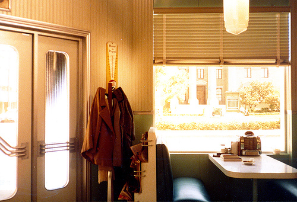

Back to the Future set from a Security Guard's Perspective

"Hey McFly. I thought I told you never to come in here."
This guy got a job as a security guard at Universal Studios when they were filming Back to the Future, and took some photos of the set in both of its versions (1955 and 1985). Very cool.